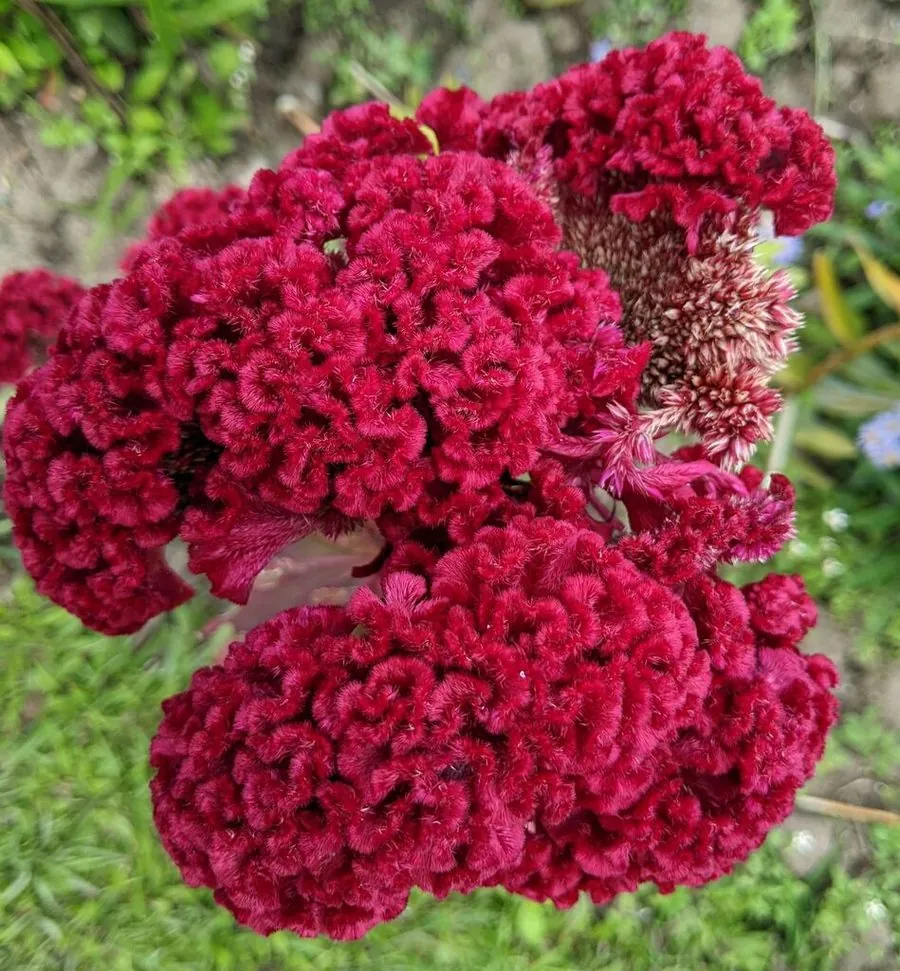

花卉与草本 · 植物界
鸡冠花 Celosia cristata

苋科一年生草本，花序扁平皱褶形似鸡冠，色彩鲜红或橙黄，是夏秋花坛常见的传统花卉，原产热带亚洲。
- 分类
- 门被子植物门纲木兰纲目石竹目科苋科属青葙属
- 栖息环境
- 热带亚洲的向阳草地与田边，喜温暖、阳光充足、干燥
- 地理分布
- 原产热带亚洲，中国各地广泛栽培，南北均有种植
- 保护级别
- 暂无评估
物种志
鸡冠花为苋科青葙属一年生草本，株高 30–90 厘米，茎直立粗壮，少分枝。叶片披针形至卵形，互生，有红、绿两色。花序顶生，扁平肉质、皱褶如鸡冠，也有羽毛状和圆球状类型，颜色有红、橙、黄、紫、白等，花期 7–10 月；果实为胞果，种子细小、黑色。
鸡冠花原产热带亚洲，喜温暖、阳光充足和干燥的环境，不耐寒、怕积水，适应性强，常自播繁殖。它的花序形态独特、颜色浓艳，适合布置花坛、花境，也可剪下作干花；嫩叶可作蔬菜食用，种子即中药青葙子，有清肝明目之效。鸡冠花在中国栽培历史悠久，是夏秋季节常见的庭院与路旁花卉，也常用于花境镶边。
形态与习性
- 株高30–90 厘米，茎直立粗壮
- 花期7–10 月，花序扁平如鸡冠
- 果期9–11 月，胞果，种子黑色
- 光照喜充足阳光
- 水分耐旱，忌积水
- 土壤疏松、排水良好的沙壤土
- 繁殖以播种为主，自播能力强
- 主要用途花坛观赏、干花、嫩叶食用、种子入药
趣味知识
- 鸡冠花的花序扁平、皱褶，形似鸡冠，因此得名。
- 除鸡冠型外，还有羽毛型、圆球型的园艺类型。
- 它的种子即中药青葙子，有清肝明目的功效。
- 鸡冠花花序剪下倒挂阴干后仍能保持形态，可作干花。